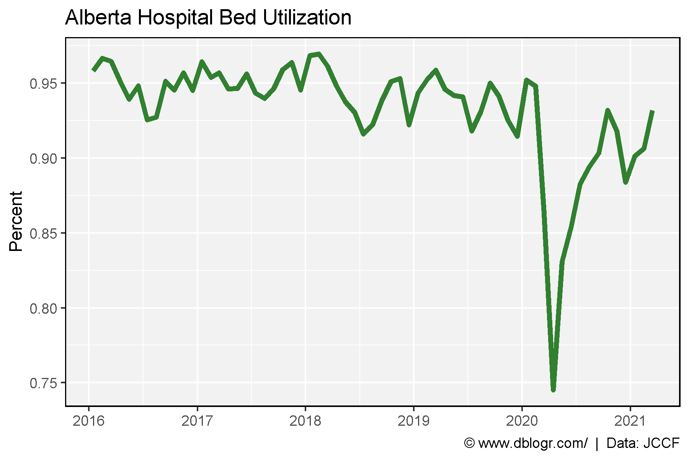
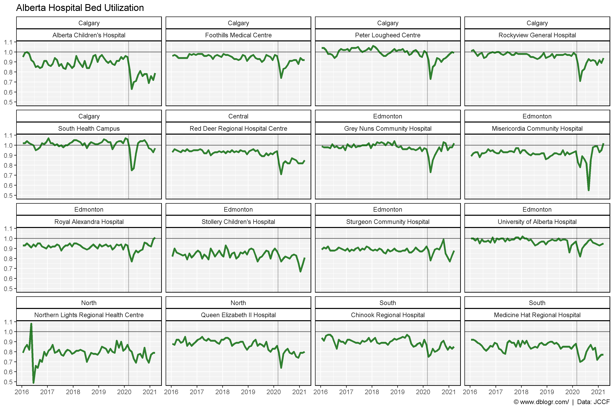
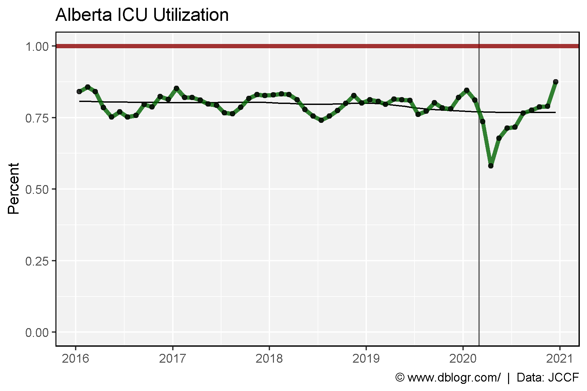
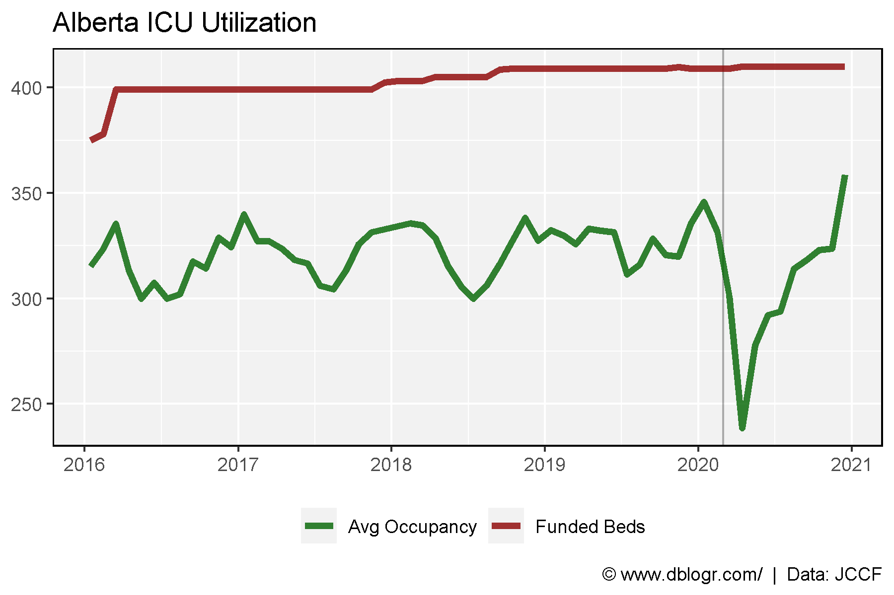
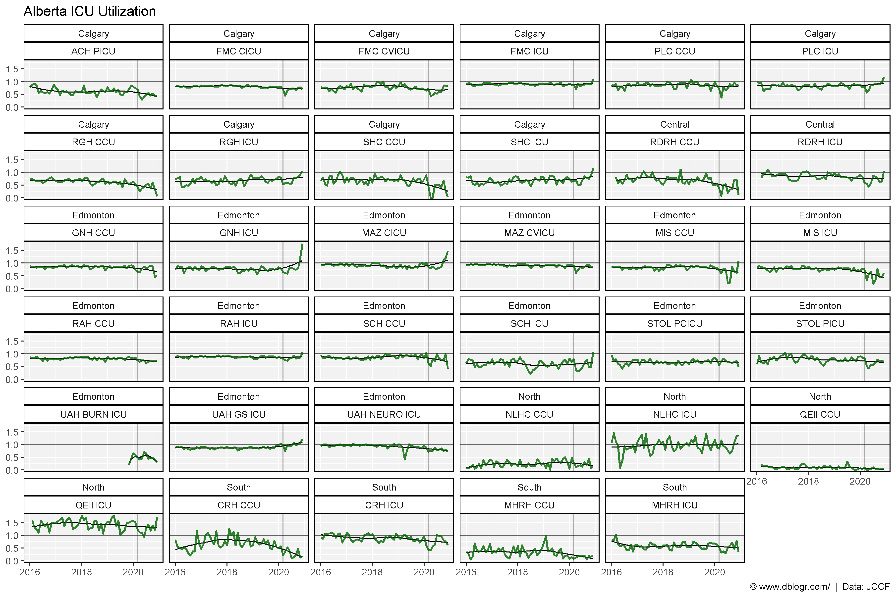
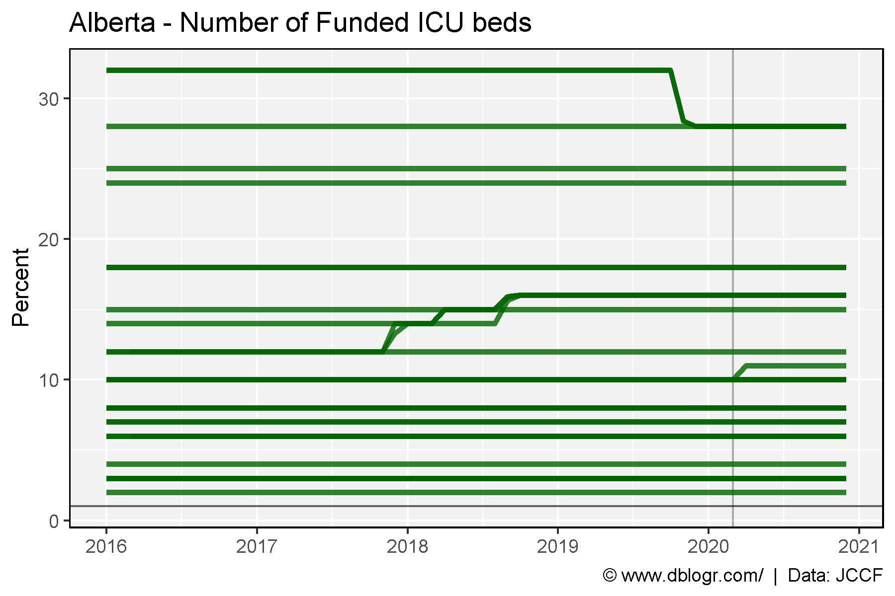

# devtools::install_github("derekmichaelwright/agData")
library(agData) # Loads: tidyverse, ggpubr, ggbeeswarm, ggrepel
library(readxl) # read_xlsx()
# Hospital bed capacity
d1 <- read_xlsx("2021-05-05-FOIP-Request-with-JCCF-calculations.xlsx",
"AcuteCare_P2_Occupancy", range = "D70:J82") %>%
gather(Year, Value, 2:ncol(.)) %>%
filter(!is.na(Value)) %>%
mutate(Date = as.Date(paste(Year, Month, "15", sep = "-"), format = "%Y-%b-%d"))
d2 <- read_xlsx("2021-05-05-FOIP-Request-with-JCCF-calculations.xlsx",
"AcuteCare_P2_Occupancy", range = "A2:BN50") %>%
rename(Measurement=Column1) %>%
mutate(Zone = fill_NA(Zone),
Facility = fill_NA(Facility)) %>%
gather(Month, Value, 4:ncol(.)) %>%
mutate(Year = c(rep(2016:2020, each = (12*48)), rep(2021, (3*48))),
Month = substr(Month, 1, 3),
Date = as.Date(paste(Year, Month, "15", sep = "-"), format = "%Y-%b-%d"))
# ICU capacity
d3 <- read_xlsx("2021-05-05-FOIP-Request-with-JCCF-calculations.xlsx",
"ICU_P2_CapacityUtilization", range = "A2142:F2154") %>%
rename(Month=1) %>%
gather(Year, Value, 2:ncol(.)) %>%
mutate(Date = as.Date(paste(Year, Month, "15", sep = "-"), format = "%Y-%b-%d"))
d4 <- read_xlsx("2021-05-05-FOIP-Request-with-JCCF-calculations.xlsx",
"ICU_P2_CapacityUtilization", range = "A2124:P2136") %>%
rename(Month=1) %>%
gather(Measurement, Value, 2:ncol(.)) %>%
mutate(Year = rep(2016:2020, each = (12*3)),
Date = as.Date(paste(Year, Month, "15", sep = "-"), format = "%Y-%b-%d"),
Measurement = ifelse(grepl("Funded Beds", Measurement), "Funded Beds", Measurement),
Measurement = ifelse(grepl("Avg Occupancy", Measurement), "Avg Occupancy", Measurement),
Measurement = ifelse(grepl("Utilization", Measurement), "Utilization", Measurement))
d5 <- read_xlsx("2021-05-05-FOIP-Request-with-JCCF-calculations.xlsx",
"ICU_P2_CapacityUtilization", range = "A2:Q2109") %>%
rename(Date=1) %>%
mutate(Date = as.Date(Date))# Plot
mp <- ggplot(d1, aes(x = Date, y = Value)) +
geom_line(size = 1.5, alpha = 0.8, color = "darkgreen") +
scale_x_date(date_breaks = "year", date_labels = "%Y") +
theme_agData() +
labs(title = "Alberta Hospital Bed Utilization",
y = "Percent", x = NULL,
caption = "\xa9 www.dblogr.com/ | Data: JCCF")
ggsave("alberta_icu_01.png", mp, width = 6, height = 4)
# Prep data
xx <- d2 %>% filter(Measurement == "Occupancy")
# Plot
mp <- ggplot(xx, aes(x = Date, y = Value)) +
geom_hline(yintercept = 1, alpha = 0.6) +
geom_vline(xintercept = as.Date("2020-03-01"), alpha = 0.3) +
geom_line(size = 1.25, alpha = 0.8, color = "darkgreen") +
scale_x_date(date_breaks = "year", date_labels = "%Y") +
facet_wrap(Zone + Facility ~ .) +
theme_agData() +
labs(title = "Alberta Hospital Bed Utilization", y = NULL, x = NULL,
caption = "\xa9 www.dblogr.com/ | Data: JCCF")
ggsave("alberta_icu_02.png", mp, width = 12, height = 8)
# Prep data
xx <- d2 %>% filter(Measurement == "Beds available")
# Plot
mp <- ggplot(xx, aes(x = Date, y = Value, group = Facility)) +
geom_vline(xintercept = as.Date("2020-03-01"), alpha = 0.3) +
geom_line(size = 0.75, alpha = 0.5, color = "darkgreen") +
scale_x_date(date_breaks = "year", date_labels = "%Y") +
theme_agData() +
labs(title = "Alberta - Available Hospital Beds",
y = "Percent", x = NULL,
caption = "\xa9 www.dblogr.com/ | Data: JCCF")
ggsave("alberta_icu_03.png", mp, width = 6, height = 4)
# Plot
mp <- ggplot(d3, aes(x = Date, y = Value)) +
geom_vline(xintercept = as.Date("2020-03-01"), alpha = 0.3) +
geom_line(size = 1.5, alpha = 0.8, color = "darkgreen") +
scale_x_date(date_breaks = "year", date_labels = "%Y") +
theme_agData() +
labs(title = "Alberta ICU Utilization",
y = "Percent", x = NULL,
caption = "\xa9 www.dblogr.com/ | Data: JCCF")
ggsave("alberta_icu_03.png", mp, width = 6, height = 4)# Prep data
xx <- d4 %>% filter(Measurement != "Utilization")
# Plot
mp <- ggplot(xx, aes(x = Date, y = Value, color = Measurement)) +
geom_vline(xintercept = as.Date("2020-03-01"), alpha = 0.3) +
geom_line(size = 1.5, alpha = 0.8) +
scale_color_manual(name = NULL, values = c("darkgreen", "darkred")) +
scale_x_date(date_breaks = "year", date_labels = "%Y") +
theme_agData(legend.position = "bottom") +
labs(title = "Alberta ICU Utilization", y = NULL, x = NULL,
caption = "\xa9 www.dblogr.com/ | Data: JCCF")
ggsave("alberta_icu_04.png", mp, width = 6, height = 4)
# Plot
mp <- ggplot(d5, aes(x = Date, y = AVG_OCC_PCT)) +
geom_hline(yintercept = 1, alpha = 0.6) +
geom_vline(xintercept = as.Date("2020-03-01"), alpha = 0.3) +
geom_line(size = 1.25, alpha = 0.8, color = "darkgreen") +
facet_wrap(REPORTS_SITE_NAME ~ .) +
theme_agData() +
labs(title = "Alberta ICU Utilization", y = NULL, x = NULL,
caption = "\xa9 www.dblogr.com/ | Data: JCCF")
ggsave("alberta_icu_05.png", mp, width = 12, height = 8)
# Plot
mp <- ggplot(d5, aes(x = Date, y = AVG_FUNDED_BEDS, group = REPORTS_SITE_NAME)) +
geom_hline(yintercept = 1, alpha = 0.6) +
geom_vline(xintercept = as.Date("2020-03-01"), alpha = 0.3) +
geom_line(size = 1.25, alpha = 0.8, color = "darkgreen") +
scale_x_date(date_breaks = "year", date_labels = "%Y") +
theme_agData() +
labs(title = "Alberta - Number of Funded ICU beds", y = "Percent", x = NULL,
caption = "\xa9 www.dblogr.com/ | Data: JCCF")
ggsave("alberta_icu_06.png", mp, width = 6, height = 4)
© Derek Michael Wright www.dblogr.com/